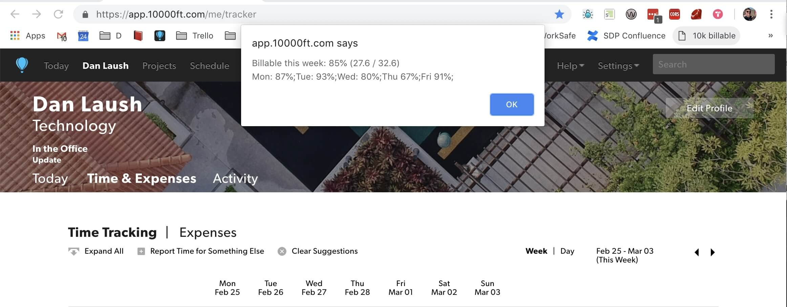
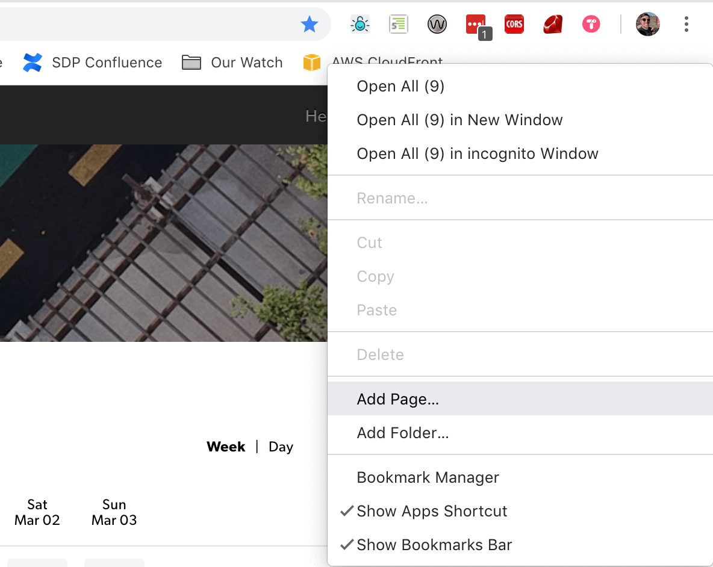
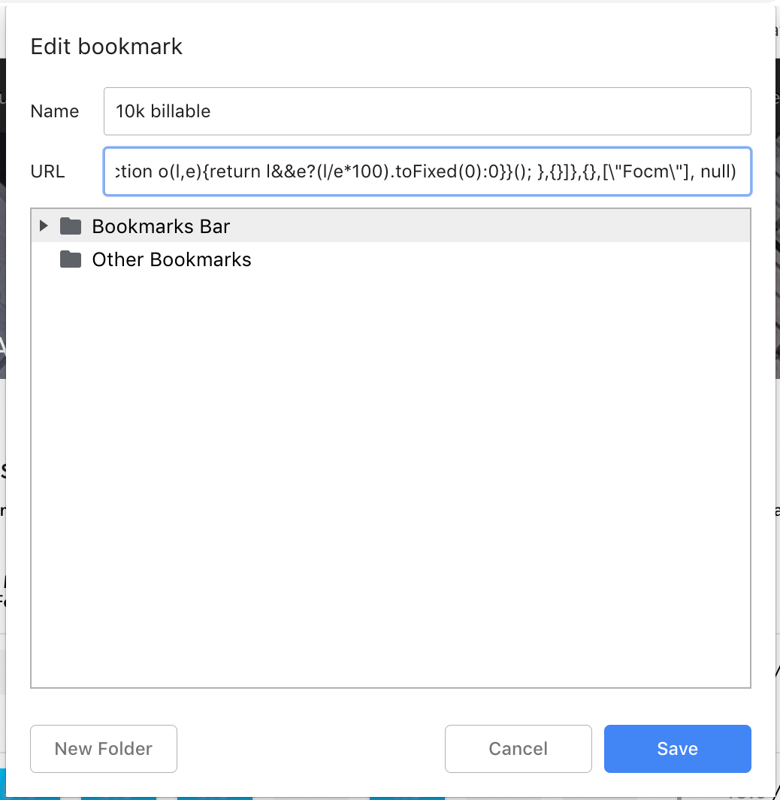

A simple tool to help you understand your current ratio of billable hours in a week, based on your 10,000 feet timesheets.
Follow the install instructions below, then open the 10k tracker and click on the bookmarklet to see a summary of your week.
to your clipboard
Right click in your browser's bookmarks toolbar and click "Add Page".

Give the bookmarklet the name you want, and paste the JavaScript code into the URL field. Click the Save button.
